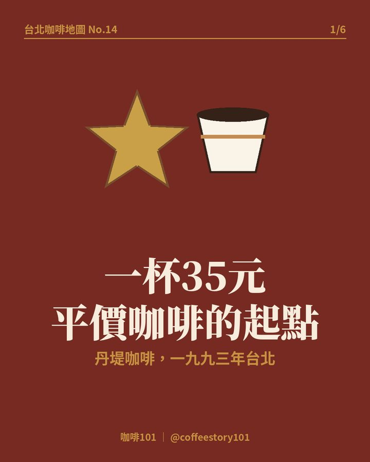
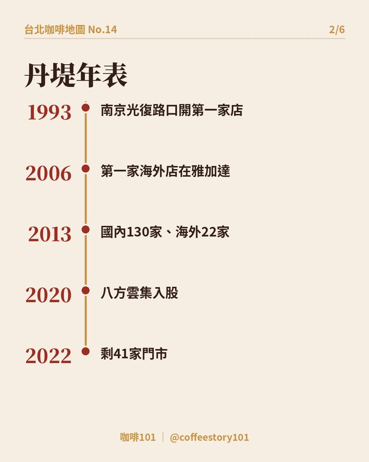
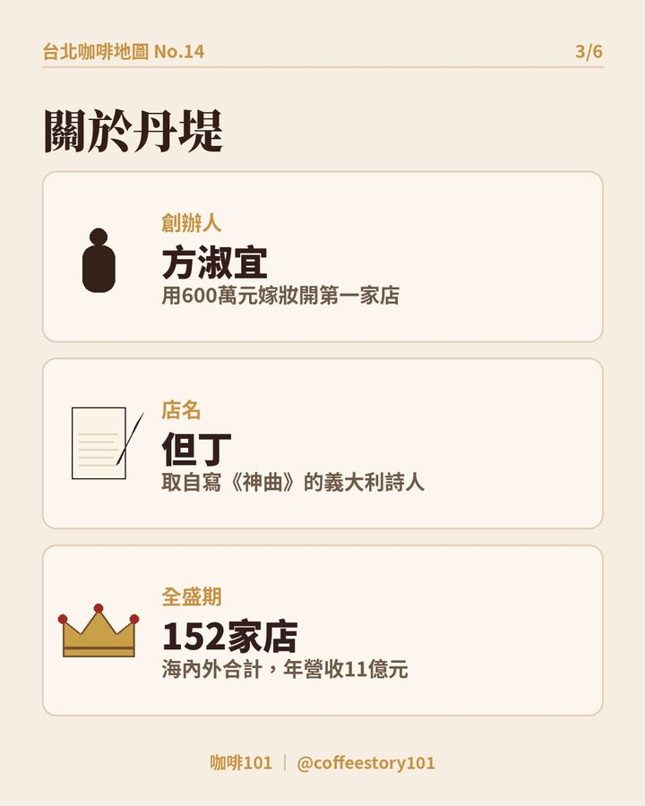
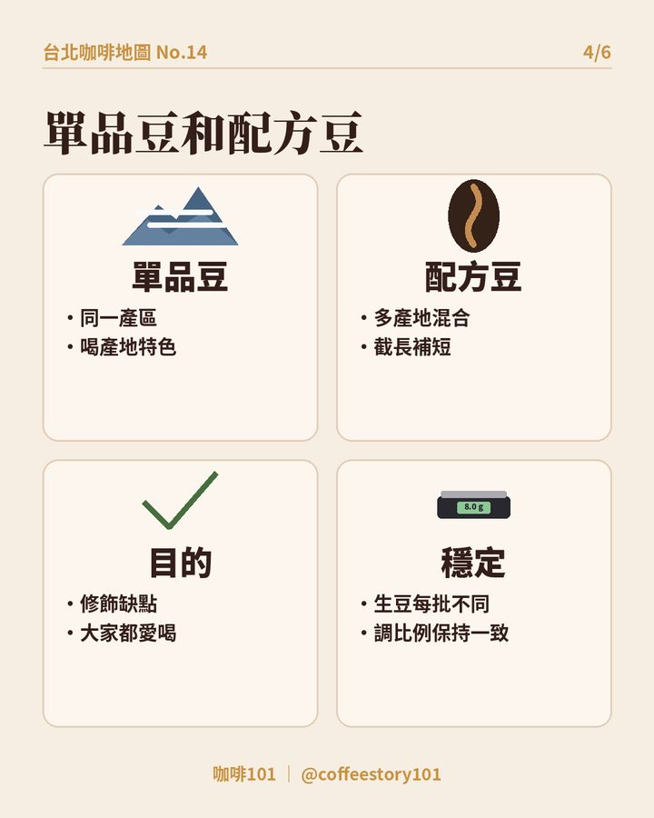
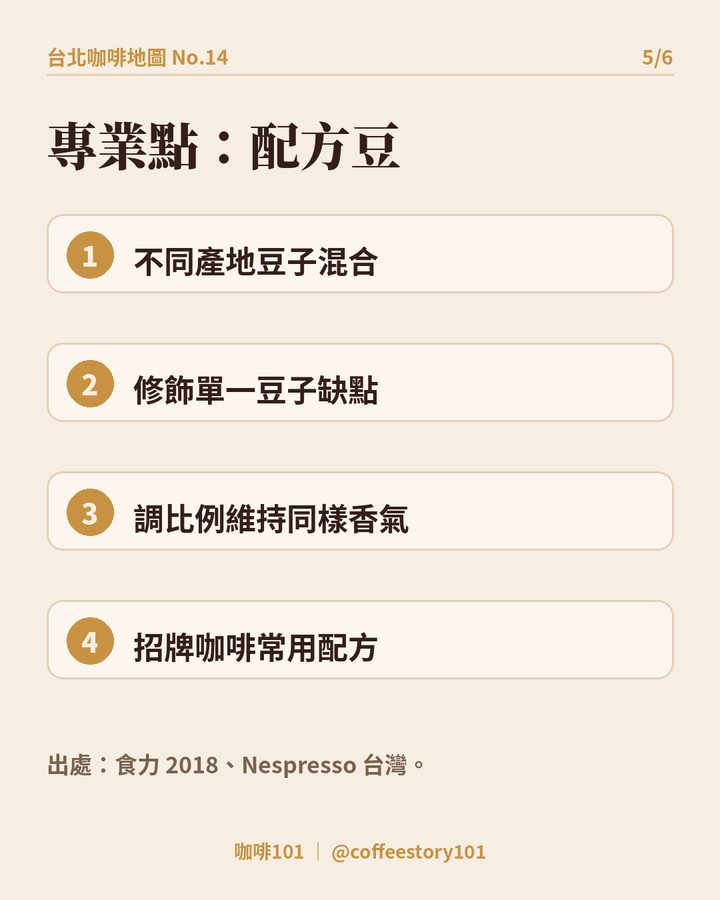
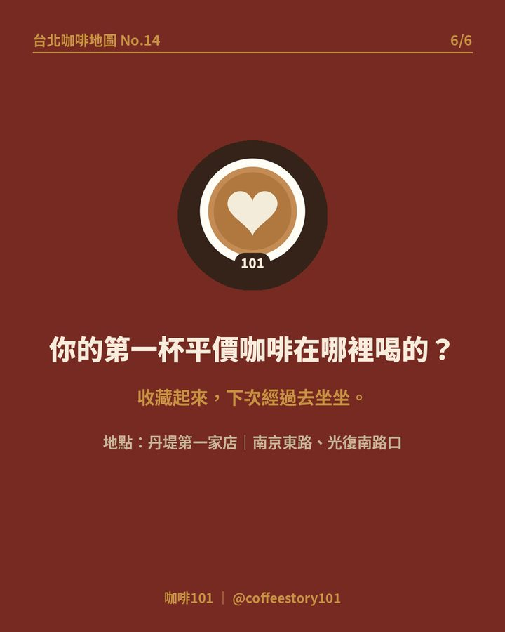

台北咖啡地圖・咖啡新浪潮
丹堤咖啡
一杯咖啡 35 元，這句口號，最早不是超商喊的。






嫁妝開的咖啡店
一九九三年，台北南京東路和光復南路口，開了第一家丹堤咖啡。創辦人方淑宜拿出 600 萬元的嫁妝開店，店名取自寫《神曲》的義大利詩人但丁。
35 元平價咖啡
招牌丹堤咖啡一杯 35 元。她喊出「35 元平價咖啡」，卻沒有去註冊，後來壹咖啡也用了這句話，平價咖啡遍地開花。
152 家店的全盛期
全盛時期，丹堤在海內外有 152 家店、年營收 11 億元，二〇〇六年還開到印尼雅加達。之後超商咖啡和新連鎖崛起，店數慢慢減少，二〇二〇年八方雲集入股。
專業點：配方豆
・把不同產地、品種的豆子混在一起
・截長補短，修飾單一豆子的缺點
・每批生豆不同，靠調比例維持同樣香氣
你還記得第一杯 35 元咖啡是在哪裡喝的嗎？
到 IG 留言告訴我們 →
到 IG 留言告訴我們 →